Linux Filesystem Hierarchy
Root Directory – /
Everything in Linux begins from the root directory, represented by a single forward slash /.
$ ls /
Output:
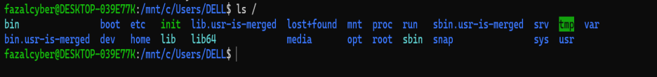
/boot – Boot Loader Files
Stores files required to boot the system, like the Linux kernel and GRUB.
$ ls /boot
Output:
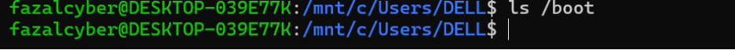
(No output — the directory exists but is empty)
/etc – Configuration Files
Contains all system-wide configuration files.
$ cat /etc/hostname
Output:
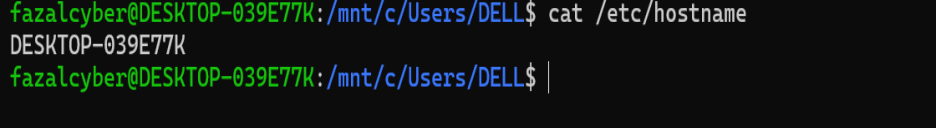
/home – User Home Directories
Houses directories for all regular users.
$ ls /home
Output:
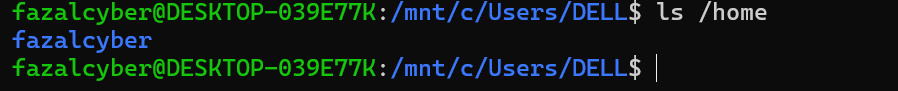
/root – Root User Home
Home directory for the superuser (root).
$ sudo ls /root
Output:
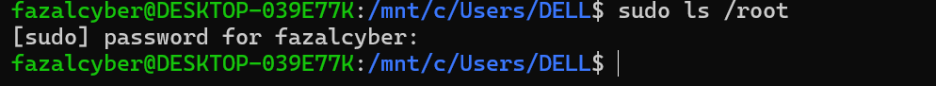
No output — the directory exists but is empty
/opt – Optional/Third-party Software
Used to install optional software packages.
$ ls /opt
Output:
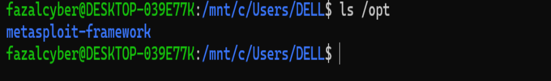
/dev – Device Files
Contains files representing system devices.
$ ls /dev/sd*
Output:
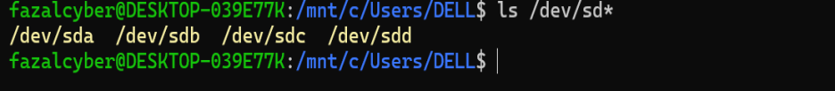
/var – Variable Files
Used for files that change frequently (logs, cache, mail, etc.).
$ ls /var/log
Output:
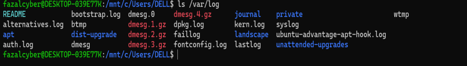
/bin – Essential User Binaries
Contains basic command binaries like ls, cp, mv.
$ ls /bin
Output:
/sbin – System Binaries
Contains binaries used for system administration.
$ ls /sbin
Output:
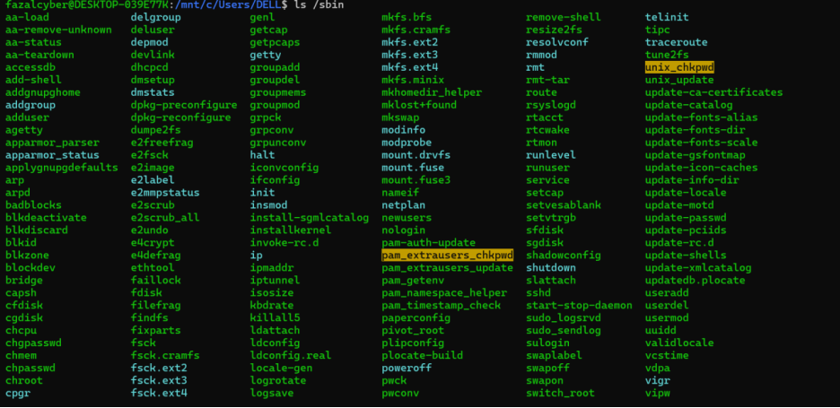
/usr – User Applications and Files
Contains user utilities and applications.
$ ls /usr/bin
Output:
/proc – Process Information (Virtual)
Provides information about processes and the system in real-time.
$ cat /proc/cpuinfo
Output:
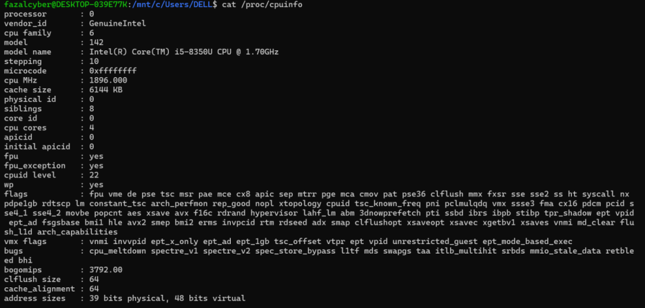
/mnt – Mount Directory
Temporary mount point for filesystems.
$ ls /mnt
Output:
/sys – Kernel and Hardware Info
Virtual directory similar to /proc.
$ ls /sys/class/net
Output:
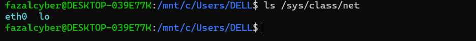
/media – Removable Devices
Auto-mount point for USB, CDs, etc.
$ ls /media/$USER
Output:
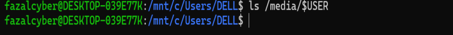
Its empty, meaning no drives are mounted there.
/run – Runtime Files
Stores data for system processes since last boot.
$ ls /run
Output:
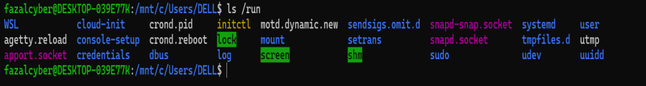
/tmp – Temporary Files
Used by apps and system to store temporary files.
$ ls /tmp
Output:
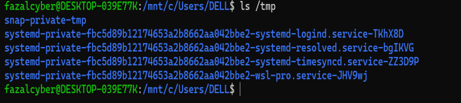
/lost+found – Recovery Directory
Used to recover files after system crashes (mostly on ext4/ext3 filesystems).
$ sudo ls /lost+found
Output:
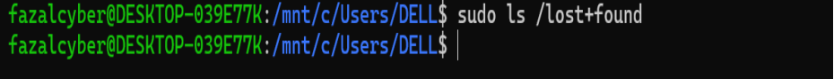
It is empty — there are no files currently stored in it.
/lib – System Libraries
Contains shared library files used by binaries in /bin and /sbin.
$ ls /lib/x86_64-linux-gnu/
Output:
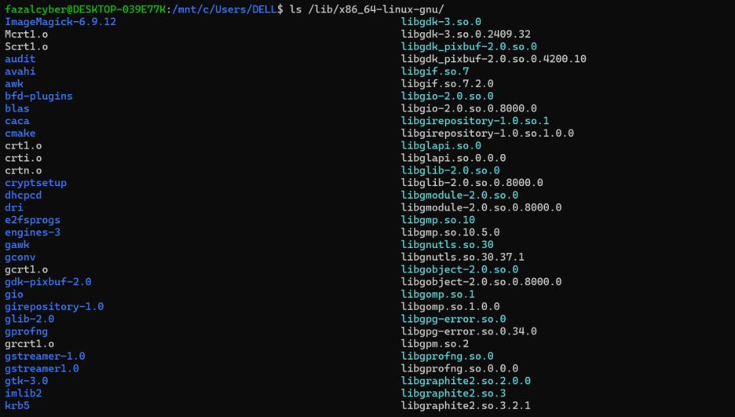
/srv – Service Data Directory
Contains data for services like web, FTP, etc.
$ ls /srv
Output:
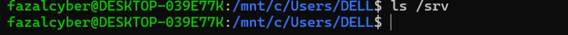
It’s currently empty